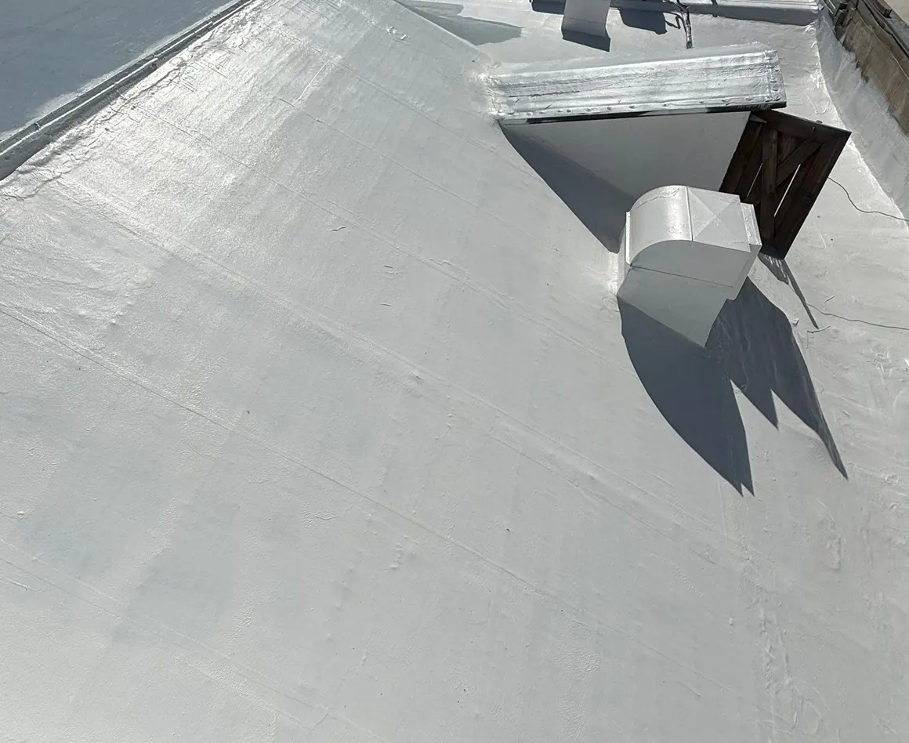

Flat roof restoration in Riverton
The existing coating had worn through around a rooftop unit and vent pipe. We applied a new coating across the roof and up the raised base of the unit.
Warhorse Roofing is based in Fremont County. We restore metal and low-slope commercial roofs in all 23 Wyoming counties, including rural properties outside city limits.

The existing coating had worn through around a rooftop unit and vent pipe. We applied a new coating across the roof and up the raised base of the unit.
We restored the roof of a downtown commercial building, including the areas around its vents, rooftop equipment and low perimeter walls.
We reinforced the seams with polyester strips, then applied a layer of reinforcing fabric across the entire roof before adding the protective topcoat.
Call 307-438-1030 or send us the building address and a brief description of the work you need. If the property is outside town, the nearest community is enough to get started.
For projects outside Wyoming, call to discuss availability. Our regional work includes a school roof coating in Rexburg, Idaho.